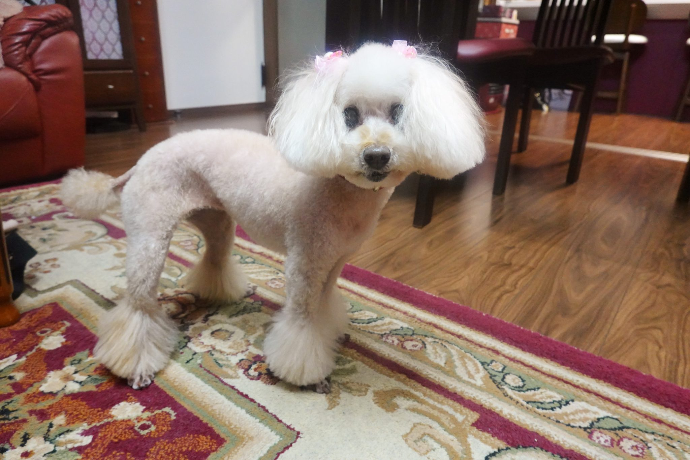
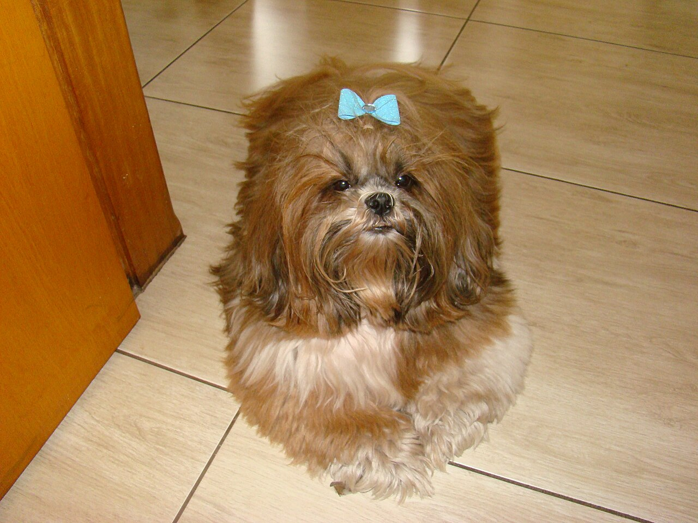
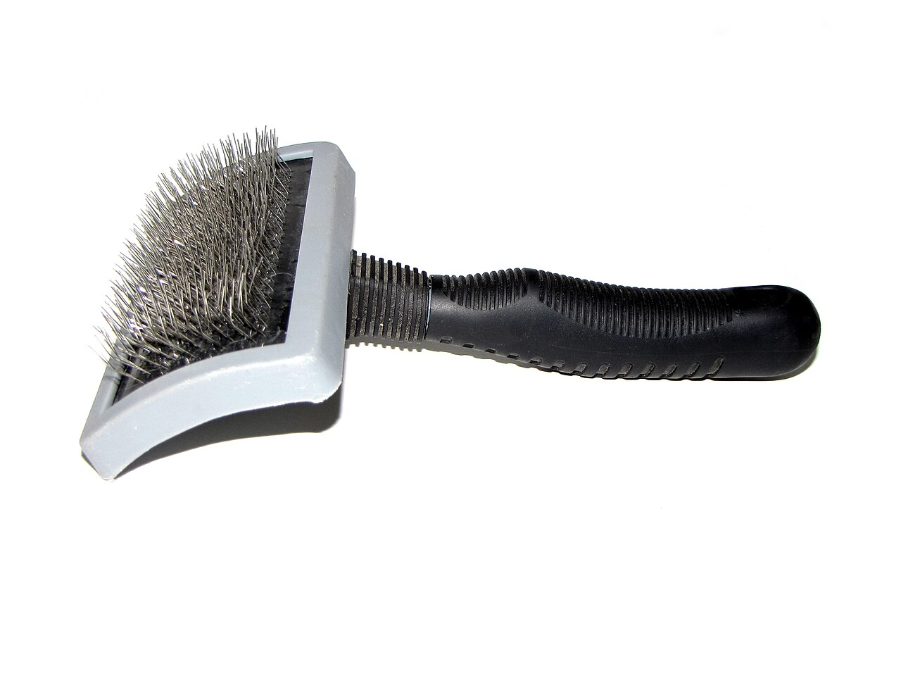
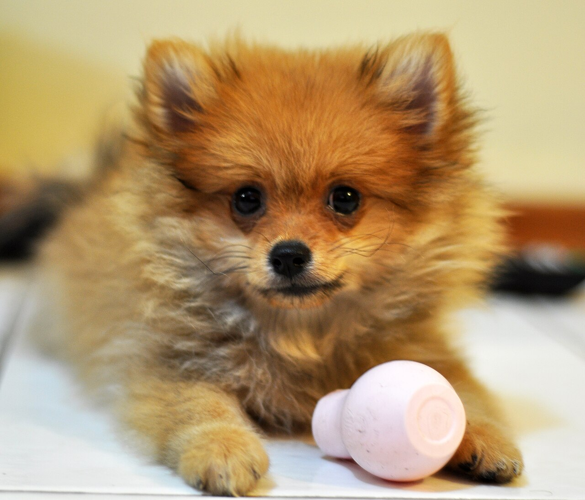

こだわり・トリマー紹介
はじめまして、トリマーの“まめ”です

まめ(トリマー)
小さなワンコが大好きなトリマーです。ワンコが「今日は楽しかった」と思える時間にしたくて、ゆっくり声をかけながら進めています。飼い主さまの「こうしたい」も、まずはお話しください。
資格:(見本)〇〇認定トリマー資格 ※架空の表記です
Pochi & Mame のこだわり4つ

短時間仕上げ
手順を整え、ワンコの負担をできるだけ小さくします。
小型犬専用の道具
小さな体と細い毛に合ったものを選んでいます。
事前カウンセリング
性格や苦手なこと、毛の状態をお聞きしてから始めます。
写真付きの帰宅メモ
当日の様子と、おうちでのお手入れのヒントを写真付きでお渡しします。
まめの道具箱
毛並みを整える仕上げ
道具で整えたあと、ふんわりした毛並みに仕上げます。

スリッカーブラシ
毛をふんわり整えるときに使います。
ハサミ
顔まわりなど細かい部分を整えるときに使います。
トリミング前のよくある質問
Q. 知らない場所、ドキドキする…
最初はお部屋をゆっくり見てもらいます。慣れてから始めるので大丈夫です。
Q. 長い時間、がまんするの?
休憩をはさみながら、ワンコのペースで進めます。
Q. 毛玉があるけど、怒られない?
怒りません。毛の状態を見て、無理のない方法をご相談します。
Q. 病院のあとでも行ける?
体調によります。心配なときは、事前にお電話でご相談ください。

まずはお気軽にご相談ください